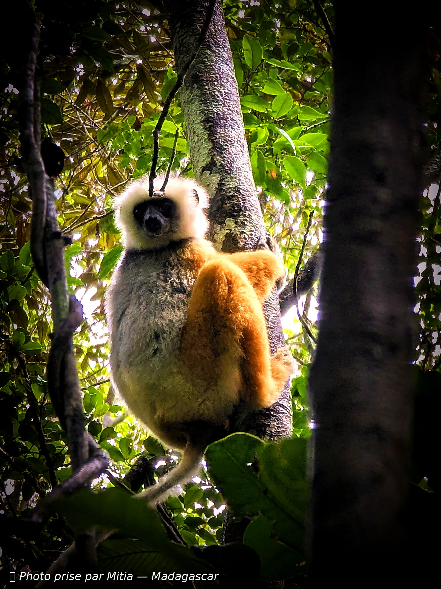
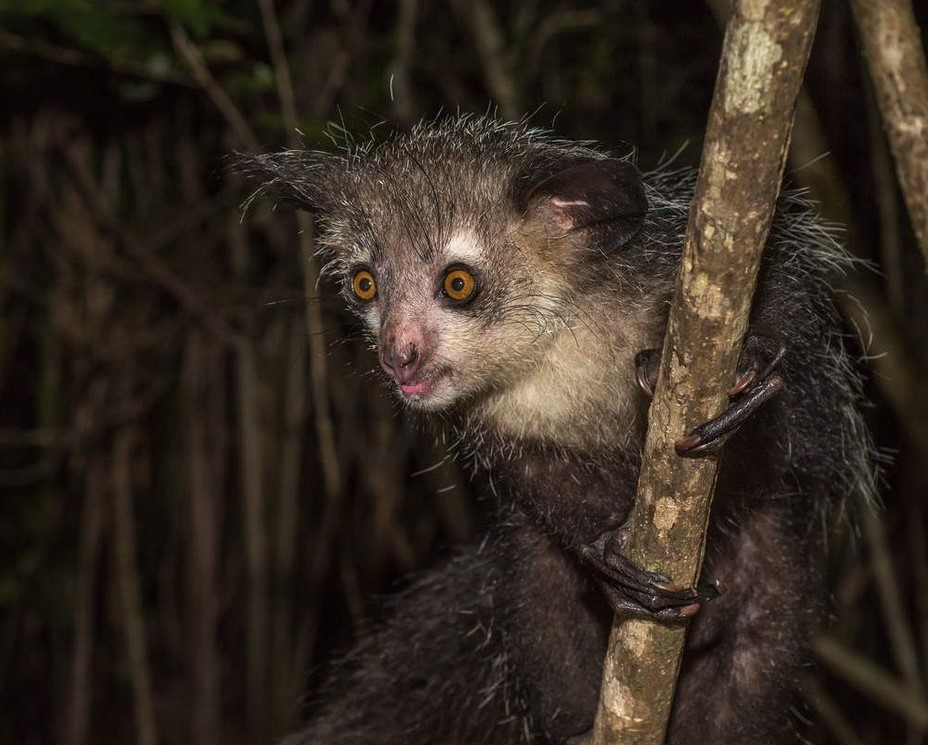
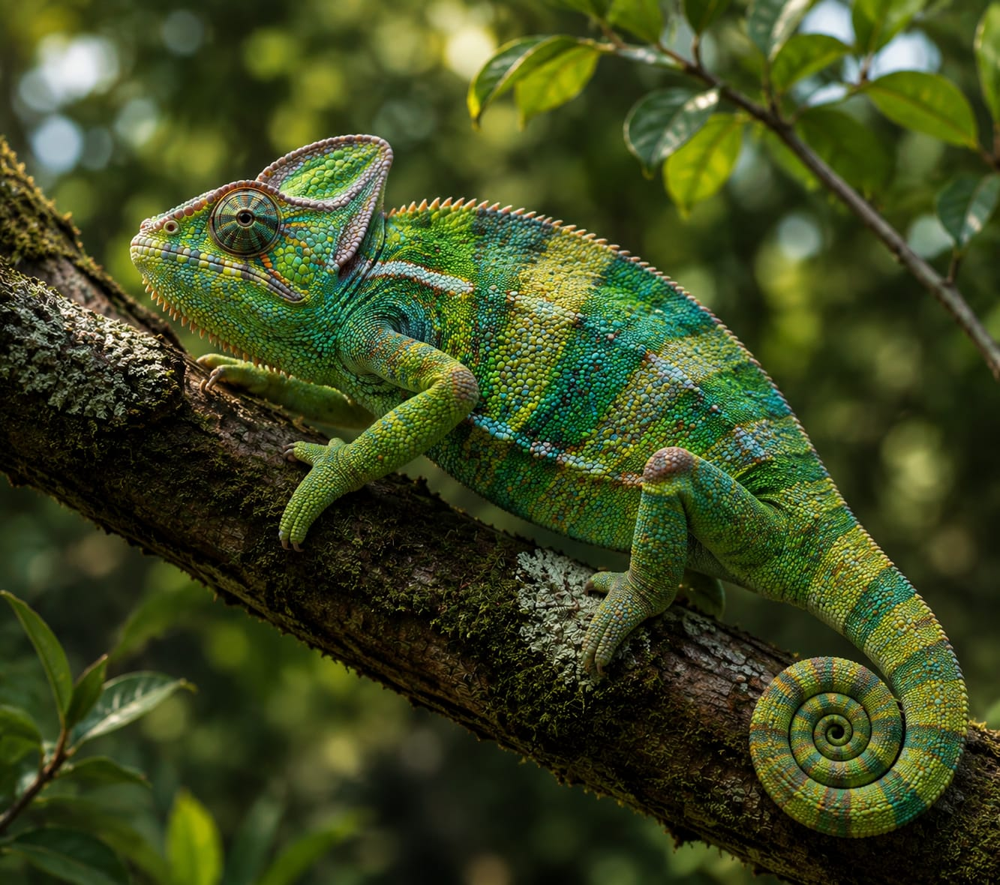

Sifaka de Mine-Edwards
Propithecus edwardsi
Le lémurien danseur aux bras dorés, unique aux forêts de l'est.
En danger critique
Aye-Aye
Daubentonia madagascariensis
Doigt du milieu extra-long pour extraire les larves des arbres.
En danger

Caméléon personi
Calumma parsonii
Le plus grand caméléon du monde — jusqu'à 70 cm.
Vulnérable

Grenouille Tomate
Dyscophus antongilii
Rouge vif, sécrète une substance collante contre les prédateurs.
Vulnérable